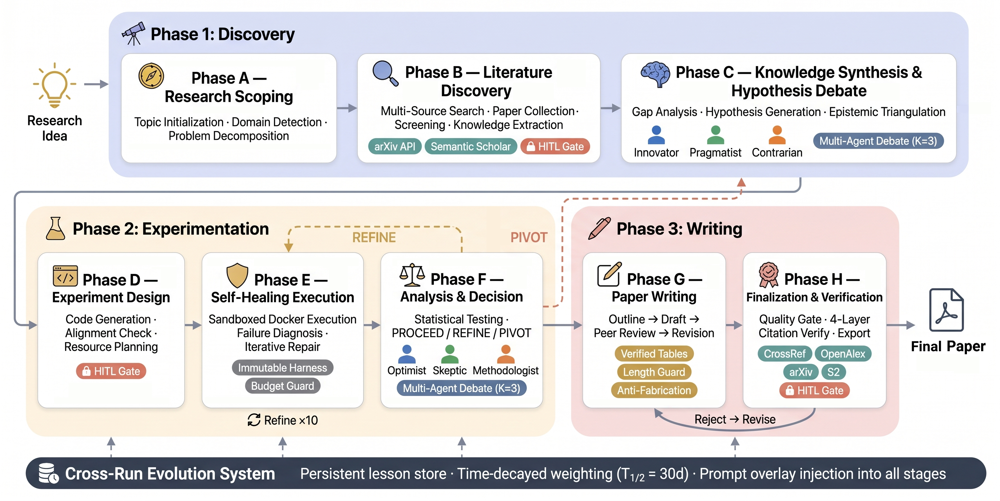
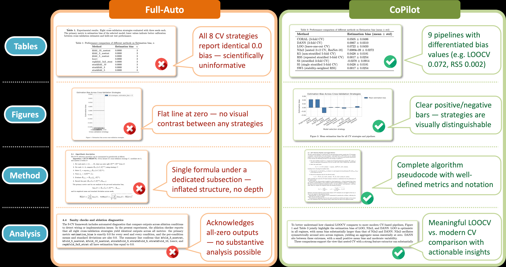

논문을 “써주는 AI”와 연구를 “하는 AI”는 다르다
2024년부터 “AI가 논문을 쓴다”는 뉴스는 더 이상 놀랍지 않다. 아이디어를 주면 관련 문헌을 찾고, 실험 코드를 짜고, 결과를 정리해 초안까지 만들어주는 시스템이 이미 여럿 등장했다.
하지만 실제 연구자라면 안다. 연구는 직선이 아니다. 세운 가설이 예비 실험에서 무너지고, 코드가 돌다가 에러를 뱉고, 결과가 기대와 달라 방향을 틀어야 하고, 이번 실패에서 배운 것이 다음 실험의 단서가 된다. 이 반복과 실패와 학습의 고리 없이는 “아이디어 → 논문” 파이프라인은 그럴듯한 보고서를 찍어내는 기계에 불과하다.
바로 이 지점에서 AutoResearchClaw1는 기존 자율 연구 시스템과 갈라선다. 단순히 논문을 더 빨리 쓰는 게 아니라, 연구 과정에서 벌어지는 실패를 감지하고 복구하며, 사람의 판단을 전략적으로 끌어들이고, 이전 실행의 교훈을 다음 실행으로 이어주는 구조를 갖췄다.
기존 자율 연구 시스템의 빈틈 세 가지
논문은 기존 LLM 기반 연구 자동화 시스템의 약점을 세 가지로 진단한다.
1) 단일 에이전트 중심 추론. 하나의 LLM이 가설을 세우고, 비판하고, 수정까지 다 맡는다. 가설에 대한 다각도 공격이 빠진다. 마치 혼자 방에서 혼자 토론하는 것과 같다.
2) 실험 실패 시 중단. 코드가 에러를 뱉거나 결과가 무의미하면, 거기서 끝이다. 실패를 “정보”로 활용하지 못하고 “종료 조건”으로 처리한다.
3) 실행 간 기억 부재. 어제 돌린 실험에서 얻은 교훈이 오늘의 새 실험에 전달되지 않는다. 매번 바닥부터 다시 시작한다.
비유하자면, 초보 연구 인턴을 방에 혼자 두고 “논문 하나 써와”라고 던져둔 것과 같다. 반면 AutoResearchClaw는 지도교수, 동료 연구원, 리뷰어, 실험 엔지니어가 함께 붙은 연구팀을 구성하려는 시도다.
AutoResearchClaw의 5개 핵심 장치
1. 구조화된 다중 에이전트 토론 (Structured Debate)
혼자 토론하는 대신, 역할이 다른 여러 에이전트가 가설을 놓고 토론한다. ML 주제에서는 Innovator(혁신가), Pragmatist(현실주의자), Contrarian(반대파)이 각자 관점에서 가설을 제안·비판·조정한다. 입자물리학(HEP) 주제에서는 Theorist(이론가), Phenomenologist(현상론자), Experimentalist(실험가)로 역할이 바뀐다.
논문은 에이전트 수 K=3이 최적의 균형이었다고 보고한다. K=2는 가설 다양성이 23% 줄었고, K=5는 토큰 사용량이 67% 늘어나는 데 비해 다양성 증가는 8%에 그쳤다.
2. 자가 복구 실행 (Self-Healing)
실험이 실패하면 멈추는 게 아니라, 실패 로그를 분석해 세 가지 중 하나를 결정한다.
- PROCEED: 실패가 치명적이지 않으니 계속 진행
- REFINE: 설정이나 파라미터를 수정해 재시도
- PIVOT: 방향 자체를 바꿈
내비게이션이 길을 잃으면 멈추는 게 아니라 막힌 도로를 보고 경로를 다시 계산하는 것과 같다.
3. 검증 가능한 보고 (Verifiable Reporting)
논문에 적힌 숫자가 실제 실험 결과와 일치하는지 확인하는 장치다. VerifiedRegistry와 citation integrity check가 숫자와 인용문을 실험 로그 및 문헌 evidence에 묶어둔다. 검증을 통과하지 못한 주장(unsupported claim)이나 조작된 수치(fabricated number)는 게이트에서 차단된다.
마치 회계 감사가 영수증과 장부를 대조하듯, “그럴듯한 보고서”가 아니라 “증거가 확인된 보고서”를 만드는 구조다.
4. 인간 개입 (Human-in-the-Loop, HITL)
사람이 모든 단계에 끼어들 필요도, 완전히 빠져도 안 된다. 논문은 7가지 개입 방식을 실험했다. 핵심은 고레버리지 순간에만 정확히 개입하는 것이다.
CoPilot 모드가 그 사례다. 평균 19회 개입으로 평균 품질 7.27, accept rate 87.5%를 기록했다. 반면 모든 단계에서 승인을 받는 Step-by-Step은 29회 개입에도 품질 5.19, accept rate 50%에 그쳤다. 더 많이 끼어들었다고 더 좋은 결과가 나오지 않은 셈이다.
5. 실행 간 진화 (Cross-Run Evolution)
한 번의 연구 실행이 끝나면 decision rationale, runtime warning, metric anomaly 같은 교훈을 추출해 다음 실행에 반영한다. 30일 반감기(half-life)의 시간 감쇠를 적용해, 최근 교훈에 더 큰 가중치를 둔다. 논문은 7일·15일·30일·60일·무제한을 비교해 T₁/₂=30일이 가장 좋은 품질 궤적을 보였다고 보고한다.

23단계 파이프라인: 아이디어가 실험과 논문으로 바뀌는 과정
AutoResearchClaw의 전체 파이프라인은 23단계로 구성된다. 초기 릴리스(v0.1.0)는 한 개의 연구 아이디어를 conference-ready paper로 바꾸는 것을 목표로 한다.
생성물은 paper_draft.md, paper.tex, references.bib, verification_report.json, 실험 기록, 차트, 리뷰(reviews.md), 진화 교훈, 최종 산출물(deliverables)까지 체계적으로 정리된다.
도메인별로 prompt bank와 adapter를 사용한다. 기본 ML bank와 HEP-ph bank가 준비되어 있고, 그 외 도메인은 ML bank에 domain-adapter overlay를 붙이는 방식이다. v0.5.0부터는 HEP, biology, statistics, chemistry/materials 등에서 도메인별 specialist executor를 선택한다.
핵심 실험 결과: ARC-Bench와 주요 수치
AI Scientist v2 대비 54.7% 우위
AutoResearchClaw는 ARC-Bench2에서 기존 AI Scientist v2보다 54.7% 높은 성능을 보였다고 보고한다.
여기서 주의할 점이 있다. 논문 실험은 25-topic experiment-stage 벤치마크로 수행됐다. 반면 GitHub README의 공개 벤치마크 설명은 55-topic(ML 25 + HEP 10 + quantum 10 + biology 7 + statistics 3)으로 확장된 전체 구성을 설명한다. 블로그에서는 “논문 실험은 25-topic, 공개 벤치마크 전체는 55-topic”으로 구분해 이해하는 것이 안전하다.
HITL Ablation: 사람은 적게, 정확히 개입할 때 최고
10개 ARC-Bench 주제, 7가지 개입 방식을 비교한 결과:
| 방식 | 평균 품질 | Accept Rate | 개입 횟수 |
|---|---|---|---|
| CoPilot | 7.27 | 87.5% | 19 |
| Step-by-Step | 5.19 | 50% | 29 |
| Full-Auto | 5.62 | 30% (3/10) | 0 |
CoPilot은 matched topics에서 Full-Auto 대비 +3.21, Step-by-Step 대비 +2.16의 품질 향상을 보였다. 더 많은 개입이 아니라, 더 똑똑한 개입이 핵심이라는 결론이다.
Component Ablation: 어떤 장치를 빼도 성능이 떨어진다
Full-Auto best-of-3 설정에서 각 장치를 하나씩 제거한 실험:
| 구성 | 완료 | 품질 | Accept | 비고 |
|---|---|---|---|---|
| 전체 시스템 | 10/10 | 5.62 | 3/10 | fabrication 없음 |
| w/o Debate | 10/10 | 4.25 | 1/10 | |
| w/o Self-Healing | 6/10 | 4.83 | 1/6 | 완료율 급감 |
| w/o Evolution | 9/10 | 5.14 | 2/10 | |
| w/o Verification | 10/10 | 5.48 | 5/10 | fabrication 발생 |
| w/o Debate & Healing | 4/10 | 3.47 | 0/4 |
가장 흥미로운 결과는 Verification 제거다. accept 수는 5/10으로 오히려 높아지지만, 조작된 수치(fabrication)가 발생한다. 즉, “높은 accept rate = 높은 신뢰성”이라는 등식은 성립하지 않는다. 검증 게이트가 없으면 그럴듯해 보이지만 실제로는 틀린 논문이 통과할 수 있다.
숫자를 의심하는 법: 주의점과 한계
논문의 결과는 인상적이지만, 다음 사항에 주의해야 한다.
1) 벤치마크 의존성. 결과 수치는 논문 저자들이 구성한 ARC-Bench와 scoring rubric에 의존한다. 외부 독립 재현 결과는 아직 확인이 필요하다.
2) 25-topic vs 55-topic 표기. 논문 abstract/실험은 25-topic experiment-stage, GitHub README는 공개 벤치마크 전체를 55-topic으로 설명한다. 수치 인용 시 어떤 기준인지 구분해야 한다.
3) GitHub stars 변동. 프로젝트 README에는 star 13.1k, fork 1.5k, 2699 tests passed 배지가 보이지만, 이는 2026-06-01 확인 시점의 값이며 실시간으로 변동한다.
4) Accept rate 산출 세부. CoPilot의 87.5%가 10개 topic에서 어떻게 산출되는지, completed outputs와 score threshold의 관계는 논문 표 원문을 확인하는 것이 안전하다.
5) Full-Auto의 한계. Full-Auto도 10/10 completion이지만 품질 5.62, accept 3/10이다. “완전 자동 연구 = 고품질 논문”으로 과장하면 안 된다.
6) 샘플 크기. HITL ablation은 10개 topic에 근거한다. 더 넓은 분야, 다른 모델, 다른 평가자에서의 일반화는 추가 검증이 필요하다.
결론: 연구자의 대체재가 아니라 증폭기
AutoResearchClaw는 인간 연구자를 대체하는 “논문 공장”이 아니다. 논문의 포지셔닝 그대로, 인간의 과학적 판단을 증폭하는 research amplifier다.
핵심 통찰은 두 가지로 요약된다.
-
자동화의 목표는 사람을 빼는 게 아니라, 사람이 가장 중요한 순간에 들어가게 만드는 것. CoPilot 모드가 Step-by-Step보다 적은 개입으로 더 높은 품질을 낸다는 결과가 이를 증명한다.
-
신뢰는 검증에서 나온다. Verification 게이트를 빼면 accept rate는 오르지만 fabrication이 생긴다. “통과율”만 보면 안 되고, “무엇을 검증했는가”를 봐야 한다.
연구 자동화의 다음 단계는 더 많은 자동화가 아니라, 더 똑똑한 인간–AI 협업 구조를 설계하는 일이다. AutoResearchClaw는 그 방향을 보여주는 하나의 설계도다.
참고 링크
- 📄 HuggingFace Paper 페이지
- 📑 arXiv Abstract
- 📥 arXiv PDF
- 💻 GitHub 저장소 — aiming-lab/AutoResearchClaw
- 📊 ARC-Bench 데이터셋